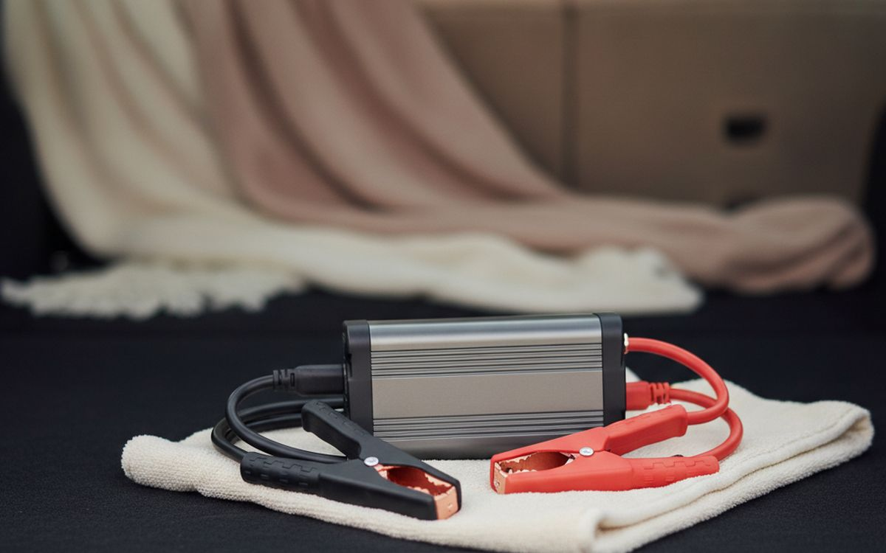
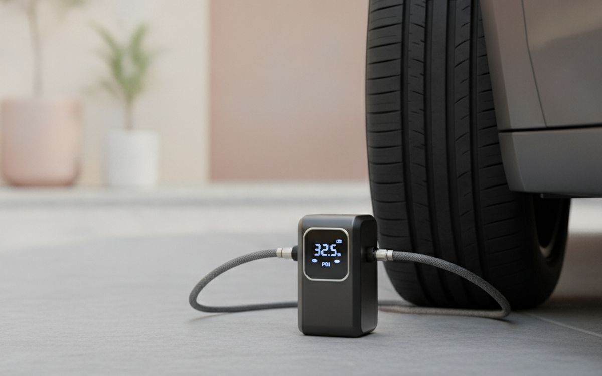
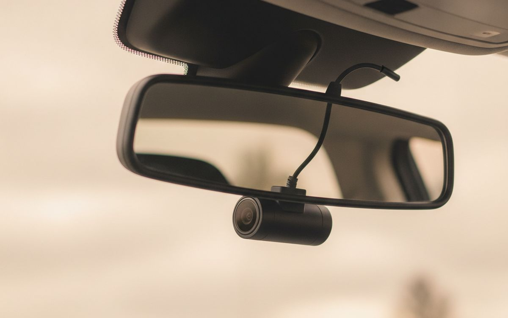
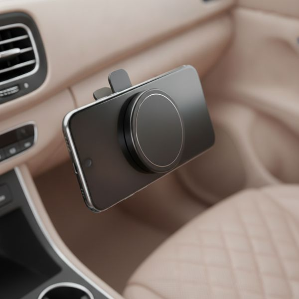
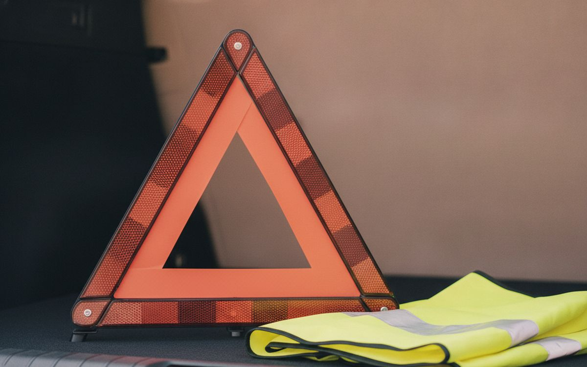
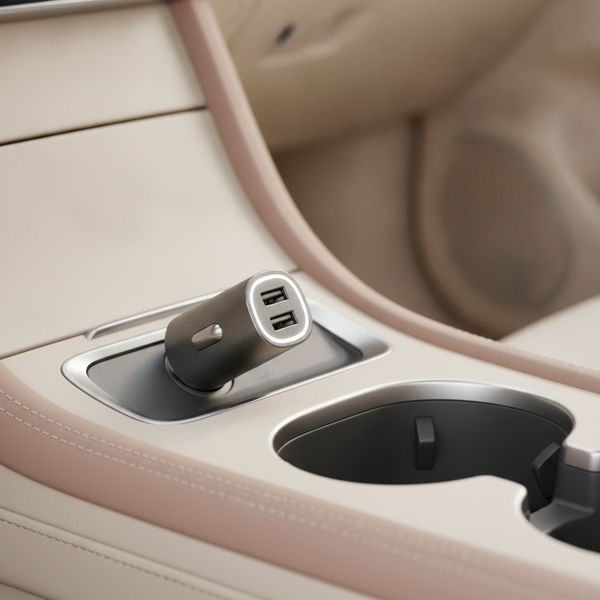
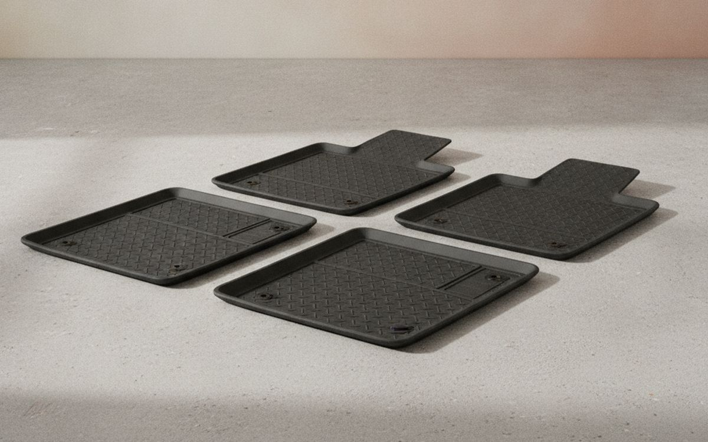
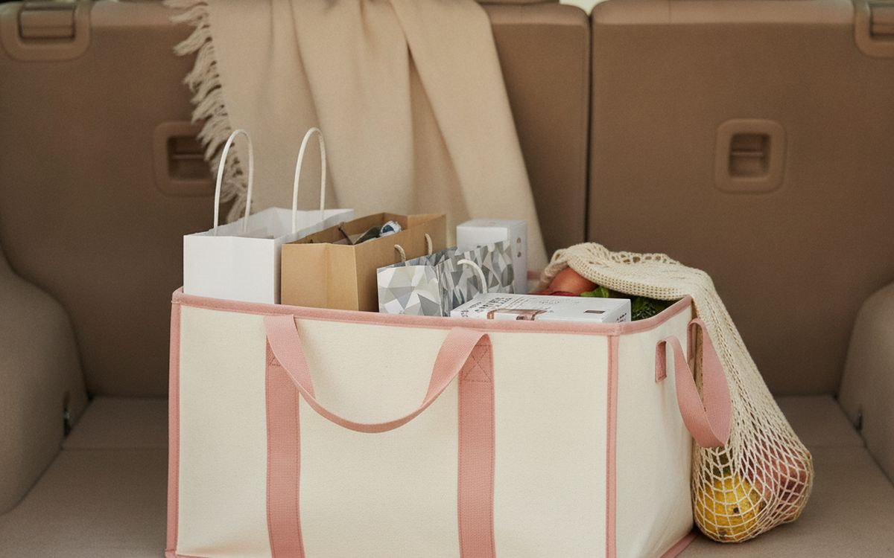
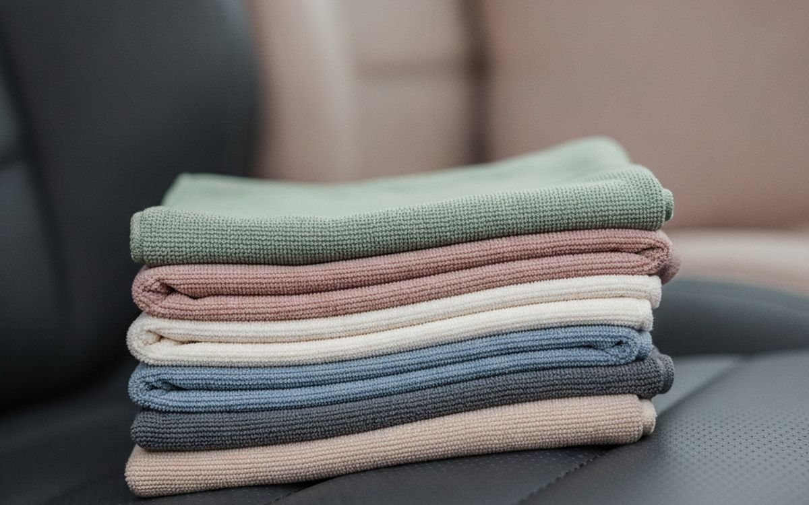
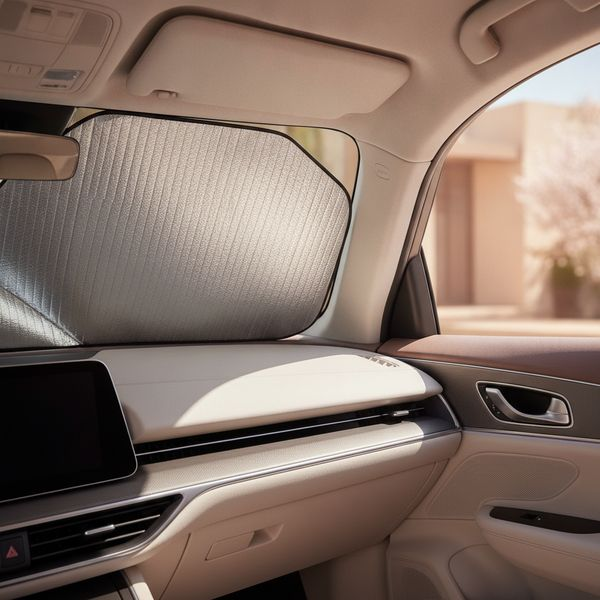

אביזרי רכב מתחלקים נקי לשתי קבוצות: דברים שהופכים נהיגה לנעימה קצת יותר, ודברים שמונעים מיום גרוע להפוך לגרוע הרבה יותר. הקבוצה השנייה קטנה, זולה ומשעממת, ושם יושב ראש הרשימה הזאת.
הכול כאן מסודר לפי השלכות. מצבר עזר משנה פעם בכמה שנים ומשנה עצומות ביום ההוא. מתאם למחזיק כוסות אף פעם לא משנה. שניהם נמכרים באותה התלהבות.
הערה אחת על חוקיות שמשתנה בין מדינות: הכללים לגבי מה מותר שיחסום את השמשה, האם מצלמות דרך רשאיות להקליט קול, ואיזה ציוד בטיחות אתם חייבים לשאת — כולם שונים. בדקו את הכללים המקומיים במקום להניח; כמה פריטים כאן הם חובה בחלק מהמדינות ומוגבלים באחרות.
המחירים הם הערכה נכון לזמן הכתיבה.
בקצרה
מצבר עזר ליתיום
זה שמציל יום גרוע
גילוי נאות. הקישורים בעמוד הזה הם קישורי שותפים. אם תקנו דרכם אנחנו עשויים להרוויח עמלה, בלי תוספת עלות לכם. זה לא משפיע על מה שנכנס לרשימה או על הסדר שלו.
איך בחרנו
אנחנו מדרגים לפי השלכות — מה פריט חוסך לכם ביום הגרוע ביותר שבו צריך אותו. אנחנו נשענים על בדיקות שפורסמו, על תקני בטיחות ועל דיווחים של בעלים לאורך זמן, ולא השתמשנו בעצמנו בכל פריט כאן. איפה שהחוק המקומי משתנה נגיד את זה במקום לתת עצה שתקפה רק במדינה אחת.
השוואה מהירה
המחירים הם הערכה נכון לזמן הכתיבה ומשתנים לעיתים קרובות.
הבחירות

01 · זה שמציל יום גרועמצבר עזר ליתיום
מצבר ריק היה פעם אומר לחכות למישהו נחמד עם כבלי התנעה, וחבילת ליתיום מודרנית בגודל ספר כיס מסלקת את התלות הזאת לגמרי. היא גם משמשת כסוללת גיבוי גדולה, אז היא מצדיקה את המקום שלה במקום רק לתפוס אותו. התאימו את דירוג האמפר לשיא למנוע שלכם — מנועי בנזין צריכים פחות מדיזל, ויחידה שמדורגת למכונית קטנה לא תניע דיזל גדול. תטעינו אותה כל שלושה עד שישה חודשים, כי הדרך המובטחת היחידה שזה ייכשל לכם היא שהיא תשב ריקה בתא המטען בדיוק כשתצטרכו אותה.
$70–150על מה מוותרים: חסר תועלת אם שוכחים להטעין אותו
בעד
- כבר לא צריך לחכות שמישהו יעצור לעזור
- יכול לשמש גם כסוללת גיבוי (power bank) גדולה
- קטן מספיק כדי להישאר קבוע בתא המטען
נגד
- חסר תועלת אם שוכחים להטעין אותו
- הספק הזרם (אמפר) חייב להתאים לגודל המנוע שלכם

02 · בטיחות וחיסכון בדלקמדחס אוויר עם מד לחץ
צמיגים בלחץ נמוך נשחקים מהר יותר, צורכים יותר דלק, מתנהגים גרוע יותר ונוטים יותר לכשל — וכמעט אף אחד לא בודק אותם חודשית כמומלץ, כי זה אומר נסיעה לתחנה. מדחס בתא המטען מסיר את החיכוך הזה, אז זה באמת קורה. קחו כזה עם הגדרה דיגיטלית מראש שנכבית אוטומטית בלחץ היעד; אלה שצריך לשמור עליהם בעין משמשים פעם אחת. בדקו לחץ בצמיגים קרים, לפני נסיעה, כי צמיג חם מראה גבוה. שימו לב שזה מטפל בתקר איטי ובלחץ נמוך, לא בפיצוץ.
$40–90על מה מוותרים: חובה למדוד לחץ כשהצמיגים קרים, אחרת הקריאה שגויה
בעד
- מבטל את התירוץ לא לבדוק לחץ אוויר
- כיבוי אוטומטי מאפשר לכם פשוט ללכת בזמן שהיא עובדת
- מחזיר את ההשקעה בזכות הארכת חיי הצמיגים וחיסכון בדלק
נגד
- חובה למדוד לחץ כשהצמיגים קרים, אחרת הקריאה שגויה
- לא פתרון למקרה של פיצוץ בצמיג

03 · ביטוח שאתם מקווים לא להשתמש בומצלמת דרך עם מצב חניה
הערך של מצלמת דרך נמצא כולו באירוע השנוי במחלוקת האחד שבו הצילום קובע מי עשה מה. קנו כזו עם קבל ולא עם סוללת ליתיום, כי פנים רכב בקיץ מתחמם מספיק כדי לפגוע בסוללה ולנפח אותה. 1440p היא המינימום המעשי כדי לקרוא לוחית רישוי ממרחק, וזו כל המטרה. שני דברים לבדוק מקומית: חלק מהמדינות מגבילות הקלטת קול בתוך הרכב, וכמה מסדירות איפה מכשיר יכול לשבת על השמשה. מצב חניה דורש חיווט קבוע כדי לעבוד כמו שצריך.
$90–250על מה מוותרים: הקלטת שמע ומיקום המצלמה כפופים לרגולציה במדינות מסוימות
בעד
- מכריעה באופן חד משמעי במקרה של תאונה או מחלוקת
- דגמים מבוססי קבל (Capacitor) עמידים לחום של הקיץ הישראלי
- מצב חניה מתעד נזקים שנגרמים לרכב בחניון
נגד
- הקלטת שמע ומיקום המצלמה כפופים לרגולציה במדינות מסוימות
- מצב חניה דורש חיבור ישיר למערכת החשמל של הרכב

04 · בטיחות, לא נוחותמעמד טלפון מגנטי או למפוח
אחיזה בטלפון בזמן נהיגה אסורה ברוב המקומות ומסוכנת בכל מקום, ומעמד בגובה העיניים אומר שניווט הופך למבט חטוף במקום להסתכלות למטה אל החיק. מעמדים מגנטיים מתחברים ביד אחת, וזה חשוב כי מעמד שדורש שתי ידיים מבטל את המטרה של עצמו. מקמו אותו כך שלא יחסום את שדה הראייה שלכם — מיקום על השמשה מוסדר בחוק בכמה מדינות. אם לטלפון שלכם יש טבעת מגנטית מובנית, קחו מעמד שנצמד אליה; אחרת פלטת מתכת מתחת לכיסוי עובדת מצוין.
$20–45על מה מוותרים: התקנה על השמשה הקדמית כפופה לרגולציה במדינות מסוימות
בעד
- משאיר את העיניים קרוב לכביש
- עגינה והסרה ביד אחת
- זול מאוד ביחס למה שהוא מונע
נגד
- התקנה על השמשה הקדמית כפופה לרגולציה במדינות מסוימות
- תושבות לפתח המזגן נוטות לצנוח על שלבים רכים

05 · לעיתים קרובות חובה בחוקמשולש אזהרה ואפוד זוהר
בהרבה מדינות אלה לא אביזרים אלא ציוד שנדרש בחוק, ובכמה מהן אפשר לקבל קנס על אי-נשיאה. מעבר לנקודה החוקית, לעמוד בשולי כביש בלילה בבגדים כהים זה באמת אחד הדברים המסוכנים ביותר שנהג עושה, ואפוד משנה בפער עצום מאיזה מרחק רואים אתכם. שמרו את האפוד בתא הנוסעים ולא בתא המטען — הרגע שבו אתם צריכים אותו הוא לפני שאתם יוצאים מהרכב, לא אחרי שהקפתם אותו לאחור על כביש פעיל.
$15–35על מה מוותרים: חסר תועלת בתא המטען — שמרו את האפוד בתא הנוסעים
בעד
- חובה על פי חוק במדינות רבות
- מגדיל באופן דרמטי את המרחק שממנו רואים אתכם
- עולה כמעט כלום
נגד
- חסר תועלת בתא המטען — שמרו את האפוד בתא הנוסעים
- הדרישות משתנות ממדינה למדינה

06 · איפה שזול הוא סיכון אמיתימטען רכב הגון
המטענים לשקע שנמכרים בתחנות דלק הם מהאלקטרוניקה הגרועה ביותר שאנשים קונים, והם יושבים באופן קבוע בשקע מחושמל בחלל סגור. יחידת USB-C עם הזנת חשמל ממותגת טוענת טלפון במהירות מלאה בזמן שניווט רץ — מה שזול לא יכול, ולכן הסוללה שלכם מתרוקנת בזמן שהיא מחוברת, וזו תלונה נפוצה ומבלבלת באמת. חפשו סימן תקן מוכר. שתי יציאות שוות את התוספת הקטנה, כי הנוסע יבקש.
$18–40על מה מוותרים: הדגמים הכי זולים הם סכנה בטיחותית של ממש
בעד
- באמת מצליח להטעין גם כשהניווט פועל
- למטענים ממותגים יש תווי תקן בטיחות אמיתיים
- שתי יציאות במחיר של אחת
נגד
- הדגמים הכי זולים הם סכנה בטיחותית של ממש
- רכבים ישנים עלולים לא לספק מספיק זרם

07 · מגן על ערך המכירהשטיחוני גומי לכל מזג אוויר
שטיח בתא הרגליים סופג הכול ולעולם לא מתאושש לגמרי, ופנים מוכתם לוקח נגיסה אמיתית ממה שרכב נמכר בו. שטיחוני גומי עם שפה מוגבהת מכילים בוץ, שלג נמס וקפה שנשפך, ושוטפים אותם בצינור תוך דקה. קנו שטיחונים חתוכים לדגם הספציפי שלכם ולא אוניברסליים — הסוג האוניברסלי מחליק קדימה ויכול להיתקע בדוושות, וזו סכנה אמיתית וזו הסיבה שיש קליפסים מקבעים. ודאו שהשטיחונים שלכם יושבים על נקודות העיגון המקוריות ולא יכולים לזחול.
$60–150על מה מוותרים: שטיחונים אוניברסליים עלולים להחליק ולהפריע לדוושות
בעד
- שומר על ערך המכירה החוזרת של הרכב באופן משמעותי
- אפשר לנקות אותם עם צינור מים בפחות מדקה
- כולא בתוכו שלג, בוץ ונוזלים שנשפכים
נגד
- שטיחונים אוניברסליים עלולים להחליק ולהפריע לדוושות
- סטים ייעודיים לדגם הרכב עולים יותר

08 · מונע מהכול להתגלגלמארגן לתא מטען
מארגן בד מתקפל עם מחיצות שומר על קניות זקופות ומונע מפריטים חופשיים להחליק ברחבי תא המטען בכל כיכר, וזה הרעש שכולם מזהים. אלה עם בסיס נגד החלקה או פסי סקוץ' באמת נשארים במקום; אלה בלי מחליקים והופכים לחלק מהבעיה שבשבילה נקנו. הוא גם מתקפל שטוח תוך שניות כשצריך את כל תא המטען למשהו גדול. זה פריט נוחות ולא בטיחות, אבל הוא מצדיק את מקומו בכך שמשתמשים בו בכל נסיעת קניות.
$30–60על מה מוותרים: בלי בסיס מונע החלקה, גם היא תחליק
בעד
- הקניות מגיעות הביתה כשהן עומדות
- מתקפלת למצב שטוח כשצריך את כל תא המטען
- בשימוש כמעט בכל נסיעה
נגד
- בלי בסיס מונע החלקה, גם היא תחליק
- תופסת מקום כשלא צריכים אותה

09 · שיפור הראות הזול ביותרסט מטליות מיקרופייבר וממחטות למסך
הציפוי שנבנה על הצד הפנימי של השמשה מפזר פנסים מולכם ושמש נמוכה בצורה גרועה, ורוב הנהגים שמים לב כמה זה היה גרוע רק אחרי שניקו. שתי מטליות מיקרופייבר בכיס הדלת עולות כמעט כלום ומשפרות ראות לילה יותר מכל שדרוג נורות. שמרו מטלית אחת לזכוכית ואחרת נפרדת לכל השאר, כי מטלית שנגעה בפוליש לדשבורד תמרח את הזכוכית באופן עקשני. נגבו את הצד הפנימי של השמשה בערך פעם בחודש ותרגישו את ההבדל בפעם הראשונה שתיסעו אל תוך שמש נמוכה.
$12–25על מה מוותרים: מטלית שספוגה בחומר הברקה תמרח את השמשה בצורה נוראית
בעד
- משפר את הראות בלילה בעלות אפסית
- תמורה טובה יותר משדרוג הפנסים הקדמיים
- דורש שתי דקות בחודש
נגד
- מטלית שספוגה בחומר הברקה תמרח את השמשה בצורה נוראית
- דורש כביסה בנפרד משאר הכביסה

10 · דבר קטן, אקלים חםמגן שמש לשמשה הקדמית
באקלים חם רכב חונה מגיע לטמפרטורות שהופכות את עשר הדקות הראשונות של כל נסיעה ללא נעימות ושפוגעות בדשבורד באופן נראה לעין תוך כמה קיצים — סדקים, דהייה ועיוות הם ברובם סיפור של קרינה וחום. מגן מחזיר אור חותך את הגרוע ביותר במחיר של שתי כוסות קפה. הסוג שמתקפל כמו אקורדיון הרבה יותר קל לאחסון ולפריסה מהסוג הקפיצי שמסובבים, שכולם מתקשים איתו. מדדו את השמשה שלכם; מגן קטן מדי משאיר רצועה חמה על הדשבורד ועושה חצי עבודה.
$20–45על מה מוותרים: הסוגים שמתקפלים כמו קפיץ מסורבלים לקיפול
בעד
- תא נוסעים קריר יותר באופן מורגש כשחוזרים לרכב
- מאט את נזקי קרינת ה-UV לדשבורד
- זול
נגד
- הסוגים שמתקפלים כמו קפיץ מסורבלים לקיפול
- מגן שמש קטן מדי ישאיר פס לוהט
שאלות נפוצות
מה צריך לחיות בתא המטען באופן קבוע?
מצבר עזר, מדחס אוויר, משולש אזהרה ואפוד זוהר — כשהאפוד בתא הנוסעים ולא בתא המטען. ארבעת אלה מכסים את המצבים שבהם חוסר מוכנות עולה לכם ביום שלם.
האם מצלמות דרך חוקיות בכל מקום?
המצלמה בדרך כלל כן, אבל הקלטת קול בתוך הרכב ומיקום ההתקנה על השמשה מוסדרים אחרת בין מדינות. בדקו את הכללים המקומיים לפני התקנה.
כל כמה זמן לבדוק לחץ אוויר בצמיגים?
חודשית, ולפני כל נסיעה ארוכה, תמיד בצמיגים קרים. זו התחזוקה השגרתית הכי מוזנחת ברכב והיא משפיעה על בטיחות, על צריכת דלק ועל אורך חיי הצמיגים.
איזה אביזר רכב לא שווה קנייה?
מייננים ורוב הגאדג'טים ה"מטהרים", מעסים למושב, ושטיחונים אוניברסליים — האחרונים ממש לא בטוחים אם הם מחליקים לדוושות. שטיחונים לדגם ספציפי עולים יותר והם היחידים ששווה להחזיק.
הדילים של היום
ראו מה מוזל עכשיו.
דילים →← כל המדריכים
איננו שותפים של אמזון ואיננו מרוויחים דבר מקישורים לאמזון. כשותפים של עליאקספרס אנחנו מרוויחים עמלה מרכישות מזכות. המחירים והזמינות נכונים לזמן הפרסום ועשויים להשתנות.